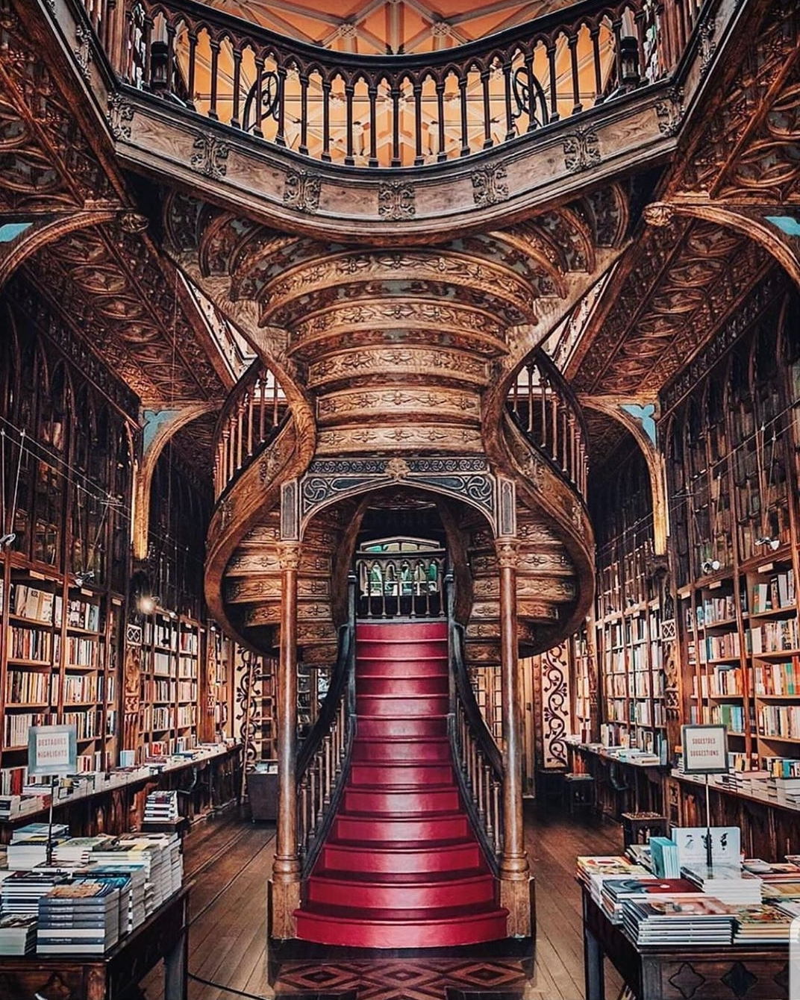

Ribeira
Along with Sé, Ribeira is one of the oldest neighborhoods of Porto.
It is part of the historic centre and is a World Heritage Centre,
protected by UNESCO since 1996.
Located on the south hillside of Porto,
Ribeira is one of the most visited places in the city.
In the neighborhood you can find dozens of restaurants,
bars and craft shops, open throughout the day but also open at night.
If you want a taste of Portuguese wines
and some delicious “petiscos”
For years, Ribeira was the place where everyone gathered
in the evening for a few drinks and talks.
Currently, the movida’s spirit is retrieving
to Ribeira once again.
The Bairro do Barredo, in the center of Ribeira,
with its old houses, welcomes visitors who came from Sé,
trough Rua dos Mercadores. Located in Barredo, is one
of the oldest civilian buildings in Porto, a small tower house,
from the 13th century, which is preserved intact,
like a precious gem from the past.
The old Rabelo boats, loaded with Port Wine cellars,
usually stay along the Douro’s banks, in Ribeira.
There, you’ll find several tourist boats, if you want
to embark and make a trip along the Douro.
Livraria Lello

Livraria Lello is a bookshop with an extraordinary
historical and architectural value,
located at the number 144 of Rua das Carmelitas,
in downtown Porto, in Portugal.
Opened in 1906, the bookshop boasts a façade in Gothic style,
distinct from the surrounding urban landscape.
Inside, shelves and ceilings are copiously.
The staircase is particularly remarkable,
as well as the large stained glass window bearing
the bookshop monogram with the motto "Decus in labore"
(dignity at work, in Latin).
In 2016, a careful restoration gave back the original
look and brightness to the façade and
the stained glass.
Opening Hours
Monday to Friday: 10am to 7.30pm
Saturday and Sunday: 10am to 7pm
Avenida dos Aliados
The imposing Avenida dos Aliados is the heart of the city,
a sloping boulevard lined with grand buildings and a central
promenade.
Most of the buildings are hotels or main branches
of the country's major banks, while the central promenade used
to be a garden but was remodelled in 2006 by renowned architect
Alvaro Siza Vieira who also designed the city's Serralves Museum.
At the top of the avenue stands the Town Hall,
a palatial building with a tall bell tower.
Made of granite and marble, its design was influenced
by municipal architecture of Flanders and France.
In front of the building is a modernist statue of Portuguese
writer Almeida Garrett.
At the other end of the avenue is Praça da Liberdade,
a square adorned with a statue of King Pedro IV on a horse.
Avenida dos Aliados there are also several cafes,
including the historical Guarany.
Sit at one of the tables on the pavement outside
to watch the world go by, and pass by the city's
main tourism office by the Town Hall.
Casa da Musica
Designed to mark the festive year of 2001,
in which the city of Porto was designated European Capital of Culture,
Casa da Música is the first building in Portugal
aimed from its conception to be exclusively dedicated
to music, either in public performances, or in the field of artistic
training and creation.
Casa da Música's project was set in motion in 1999,
as a result of an international architecture tender won by
the project presented by Rem Koolhaas -
Office for Metropolitan Architecture.
Excavations began in 1999, at the old tram's terminus station
in Boavista roundabout (Rotunda da Boavista),
and Casa da Musica was inaugurated in the spring of 2005,
on April 15th.
Opening Hours:
9.30am to 7pm